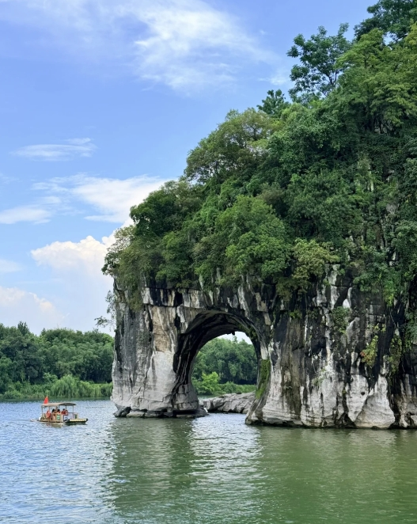

Somewhere between Guilin and Yangshuo, a boat drifts through limestone
peaks that have been painted, poeticised and photographed for a
thousand years — and still look unlike anywhere else on earth.
Scroll to follow the boat downriver — each bend has a story.

01Where the Mist Begins
01
Where the Mist Begins
The cruise pushes off before the fog has fully lifted. One by one, limestone peaks rise out of the haze like ink strokes on wet paper — some say every shape holds a story: an elephant drinking, a brush resting, a phoenix taking flight.
Past Yangshuo, the big cruise gives way to something smaller — a raft of lashed bamboo poles, poled by hand through shallow, glassy water. The peaks feel close enough here to touch.
04
Villages Along the Bank
Water buffalo wade in the shallows. Elderly farmers wave from doorways. Fishing nets dry on wooden racks outside stilted houses that have watched the river pass for generations, largely unchanged.
05
Terraces in the Distance
Inland, the land climbs into rice terraces layered like contour lines up the hillside, flooded fields catching the afternoon light in long silver ribbons — worked exactly as they were generations ago.
06
Where the River Rests
As the sun drops behind the last row of peaks, the water turns the colour of tea. Fishermen light lanterns on their rafts, and for a moment the whole valley seems to hold its breath before nightfall.
WATCH THE JOURNEY
A Glimpse Along the Li River
Watch a short video before exploring the local food.
LOCAL FLAVOURS
Taste the Riverbank
Tap a dish to read its story.
PLAN YOUR DAY
One Day Along the River
A gentle pace, best kept unhurried.
06:30
Board the Cruise
Depart Guilin as the morning mist still clings to the water.
09:30
Karst Peaks & Cormorants
Drift past the river's most iconic limestone scenery.
12:00
Arrive in Yangshuo
Lunch on beer fish beside the pier.
15:00
Bamboo Raft & Cycling
Glide through the countryside at water level.
18:00
Sunset at Xingping
Watch the peaks turn gold from the riverbank.
TRAVEL GENTLY
Leave the River as
You Found It
The Li River sustains fishing villages and rice paddies long after the last cruise of the day.
01
Mind the Water
Skip single-use plastics on board and choose reef-safe sunscreen — the same water irrigates the rice terraces downstream.
02
Support the Villages
Buy tea, snacks and handicrafts directly from riverside stalls rather than large tour-operator shops.
03
Respect the Fishermen
Cormorant fishing displays are staged for visitors — tip fairly, and always ask before photographing someone at work.